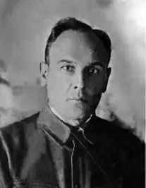

Український письменник, поет, автор історичних романів, публіцист Поліщук Клим Лаврентійович народився на Волині 25.11.1891р.в сільській родині. Змалку вчився читати у батька, а як тільки зміг – перечитав геть усе, що потрапляло до рук. Тільки-но навчився писати – взявся записувати матусини казки, легенди, колискові та народні пісні. Тобто, свій шлях письменника обрав мало не з пелюшок. Також непогано малював різноманітні вивіски та географічні карти для сільських шкіл – тим і заробляв собі на життя.
Як то сталося – невідомо, але 1905-го кілька його віршів потрапили на сторінки журналів і дуже сподобалися І.Нечуй-Левицькому та Б.Гринченку.
1909-го Клим Поліщук поїхав до Петербурга, де навчався у художньому училищі. Тоді ж побачила світ його перша прозаїчна публікація. 1912-го переїхав до Житомира, багато подорожував Волинським краєм, записував фольклорні історії та легенди, які згодом перетворилися у кілька збірників. У серпні 1914-го був заарештований за "мазепинську" та "сепаратистську" діяльність, висланий у Кременчук, потім у Росію. Працював у Курську та Петербурзі. Коли сталася Жовтнева революція, він був у Пскові, потім поїхав до Києва. Працював у редколегіях кількох газет і журналів. Після падіння УНР переїхав до Львова (тоді це була Польща), там одружився, плідно працював та публікував свої твори, багато перекладав з польської. Восени 1925 Поліщук з родиною повернувся до України. Жили спочатку у Лубнах, потім переїхали до Харкова. Працював у державному видавництві, свої твори друкував у журналах. У листопаді 1929 був арештований та засланий на Соловки, а 3.11.1937р. після перегляду справи "українських націоналістів" розстріляний. 14 квітня 1992 реабілітований посмертно прокуратурою Харківської області.